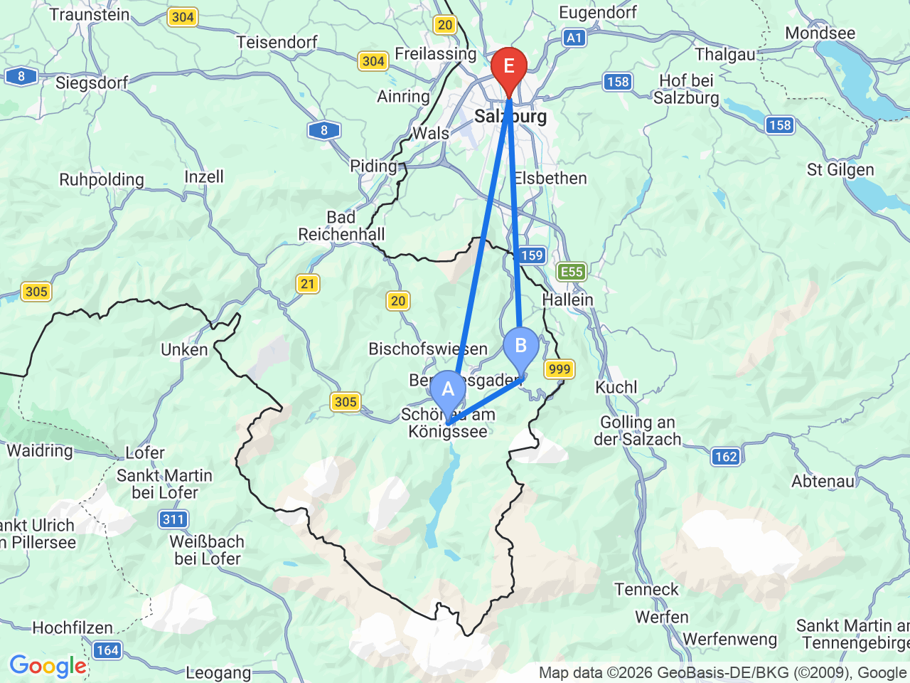
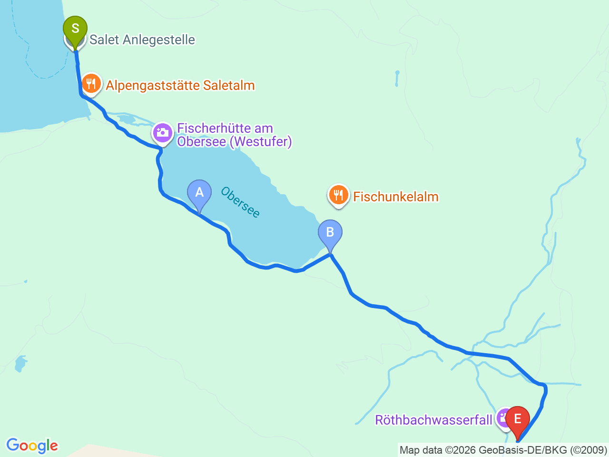

Day 30-1 · 2026-09-14（一）
奧地利・薩爾茲堡/德國國王湖/維也納 Day 2/10
【方案一】國王湖上湖健行 & 鷹巢大挑戰日
搶08:00首班船，健行至 Röthbachfall 瀑布，下午銜接鷹巢，跨國一日雙景點
💱這是9/14的兩個方案之一（另一個是Day30-2，用預約船票、不排鷹巢的悠閒版）。這個方案的官方時刻表9/14還是旺季（27.06-14.09），首班船Seelände 08:00發車；但線上訂票系統實測查到最早可訂班次是08:45——研判是08:00/08:30場次的「線上配額」已被訂完，現場售票口不一定同樣額滿。建議照原計畫早點到現場排隊試買08:00或08:30的票，線上先訂08:45當保底，兩邊都有著落最保險
⏰如果最後只買得到08:45的船班，下午鷹巢會變得非常趕（詳見下方行程表備註，鷹巢可能只剩10-20分鐘甚至來不及），建議屆時考慮：(1) 放棄鷹巢，把時間留給上湖健行；或(2) 上湖健行縮短到只走Fischunkelalm、不去Röthbachfall瀑布，換取鷹巢時間；鷹巢最後一班上山接駁車約16:00，下山最後一班約16:30。如果覺得這個方案風險太高，可以改用 Day30-2（悠閒版，不排鷹巢）
薩爾茲堡↔國王湖↔鷹巢

上湖健行路線（Salet→Röthbachfall）

國王湖船班時刻表（官方，2026/4/25-10/11適用）DAY 30-1
| 適用季節 | 去程首班(Seelände發) | 去程末班(Seelände發) | 回程首班(Salet發) | 回程末班(Salet發) | 備註 |
|---|---|---|---|---|---|
| 早春 4/25-5/22 | 09:00 | 16:15 | 09:55 | 17:10 | 之後每約30分鐘一班 |
| 中季 5/23-6/26 | 08:30 | 16:15 | 09:25 | 17:10 | 之後每約30分鐘一班 |
| 旺季 6/27-9/14 | 08:00 | 16:45 | 08:55 | 17:40 | 9/14是旺季最後一天，適用這個班表；之後每約30分鐘一班 |
| 淡季 9/15-10/11 | 08:30 | 16:15 | 09:25 | 17:10 | 之後每約30分鐘一班 |
固定時間行程DAY 30-1
| 時間 | 地點 | 地點 (英文) | 交通方式／班次 | 價格 | 預計停留(分鐘) | 備註 |
|---|---|---|---|---|---|---|
| 05:55 | 薩爾茲堡中央車站搭840路巴士 | 巴士約49分鐘 | 首班車，確切班次請出發前查 salzburg-verkehr.at | |||
| 06:44 | 抵達國王湖，步行至碼頭 | 1Königssee, Germany | 步行約5分鐘 | 建議直接到售票口詢問08:00/08:30現場是否還有票，不要只依賴線上訂到的08:45 | ||
| 08:00 | 搭首班船直達 Salet（上湖碼頭） | 船程約55分鐘 | 來回約€19 | 樂觀版；若只買到08:45場次，此列全部往後推45分鐘 | ||
| 08:55 | 抵達 Salet，開始健行 | 2Salet, Königssee, Germany | 步行 | 若搭08:45船，約09:40抵達 | ||
| 09:10 | 上湖（Obersee）湖畔 | 3Obersee, Königssee, Germany | 步行約1km | |||
| 09:55 | Fischunkelalm 山中小屋 | 4Fischunkelalm, Germany | 步行約1.7km | 見上方三餐資訊 | 30 | 午餐/補給點 |
| 10:40 | Röthbachfall 瀑布底 | 5Röthbachfall, Königssee, Germany | 步行約2km | 免費 | 30 | 德國最高瀑布，落差約470公尺；若搭08:45船，約11:30才到，建議考慮改走到Fischunkelalm就折返，不繼續往瀑布 |
| 12:55 | 搭船返回國王湖 | 船程約55分鐘 | 回程每約30分鐘一班（08:55/09:25/09:55...），實際依抵達Salet時間銜接最近一班 | |||
| 13:50 | 搭840路巴士前往 Obersalzberg | 巴士約22分鐘 | 同一條840路線，不用轉車；若延誤到14:30後才回到Königssee，鷹巢會非常趕，建議直接放棄改隔天/其他方式 | |||
| 14:15 | 轉乘849路接駁車上鷹巢 | 巴士約15分鐘 | 私人車輛不可直接開上山，只能搭官方接駁車 | |||
| 14:45 | 鷹巢 | 6Kehlsteinhaus, Obersalzberg, Germany | 步行+電梯 | 約€15（不含接駁車） | 60-90 | 希特勒時期建造的山頂建築，可俯瞰阿爾卑斯山景；建議事先上官網訂票 |
| 16:00 | 搭849路接駁車下山 | 巴士約15分鐘 | 務必抓在最後一班之前下山 | |||
| 16:15 | 搭840路巴士返回薩爾茲堡 | 巴士約49分鐘 | ||||
| 17:05 | 抵達薩爾茲堡 |
每日三餐
早餐
飯店早餐或自備
05:55的巴士，飯店早餐時間可能來不及，建議前一晚先買好路上吃的麵包
午餐
Fischunkelalm 山中小屋Fischunkelalm約 €8-15／人
📍 Fischunkelalm, Germany上湖健行途中唯一補給點，簡單輕食/飲料，旺季排隊可能要等，時間抓緊的話可以只買個東西邊走邊吃
晚餐
薩爾茲堡老城區餐廳（自由選擇）約 €15-25／人
回到薩爾茲堡通常已經傍晚，累了建議飯店附近簡單解決即可
住宿資訊
Austria Trend Hotel Europa Salzburg
📍 Rainerstraße 31, 5020 Salzburg